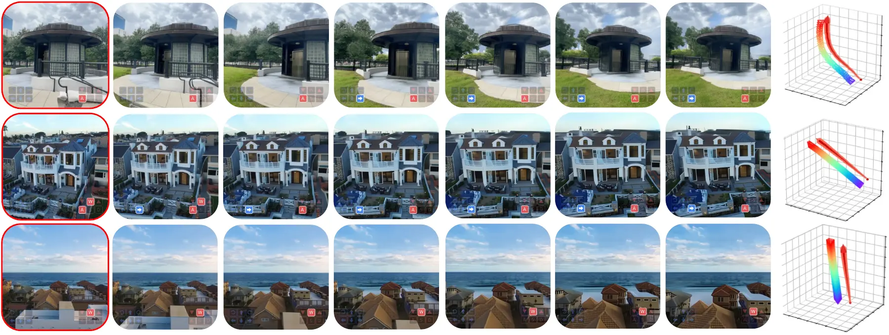
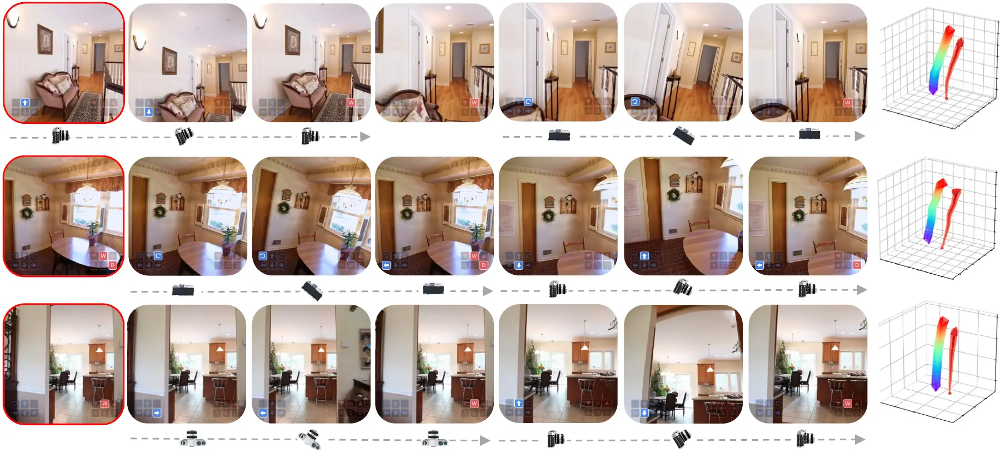
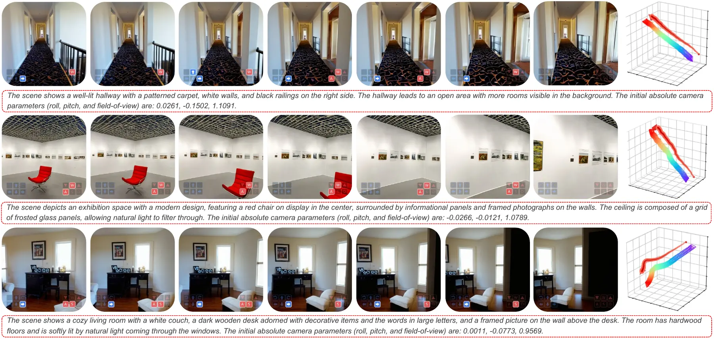

01 · Physics
Physics World State
Gravity-aware camera understanding and physically consistent trajectory propagation across long-horizon motion.
A unified multimodal world model
Scaling a Unified Multimodal Model
with Native 3D World States
1S-Lab, Nanyang Technological University 2University of Michigan 3Beijing Jiaotong University 4ACE Robotics
Preprint · 2026
Interactive 3D world explorer
Explore representative scene point clouds through the same three world-state views. Drag to orbit, scroll to zoom, and right-drag to move the scene.
Drag orbit · Scroll zoom · Right-drag move
Interactive interface inspired by PointDiT; the viewer is implemented locally for this project page.
Unified architecture
Puffin-World combines a geometry-aligned vision encoder, an LLM, a diffusion model, and a lightweight connector. It supports understanding, generation, and reconstruction without relying on task-specific external geometry modules.

A gravity-aware absolute perspective field is paired with ray-based relative geometry, enabling precise control over camera intrinsics, orientation, and trajectory.
The model propagates physical constraints through generated trajectories, improving visual consistency and preserving gravity under challenging rotations and long camera motion.
Causal reasoning tokens and asymmetric diffusion attention let the same model interpret camera geometry and synthesize world-consistent observations.
Four capability families
Understands camera parameters, spatial relationships, and the physical principles behind an observation.
Generates observations from explicit camera poses across roll, pitch, yaw, and compound motion.
Supports image-to-3D, text-to-3D, long rotations, native states, and direct 3D reconstruction.
Enables interleaved conversation, world exploration, and self-calibrated interaction with generated environments.
Evaluation highlights
On Puffin-Cam-Bench, Puffin-World combines low angular error with competitive image fidelity. It also achieves the best median camera errors and the majority of AUC metrics across four camera-understanding benchmarks.

Physics propagation
Physics propagation improves reconstruction quality and camera alignment together, rather than trading one for the other.



Scaling with Puffin-16M
Puffin-16M combines dense camera-aware visual supervision with trajectory data that covers challenging pitch, yaw, roll, and compound motion.

Citation
@article{liao2026puffinworld,
title = {Puffin-World: Scaling a Unified Multimodal Model with Native 3D World States},
author = {Liao, Kang and Luo, Yihang and Wu, Xiao-Ming and Jin, Linyi and Wu, Size and Lin, Chunyu and Zhao, Yao and Wang, Fei and Li, Wei and Loy, Chen Change},
journal = {Preprint},
year = {2026}
}